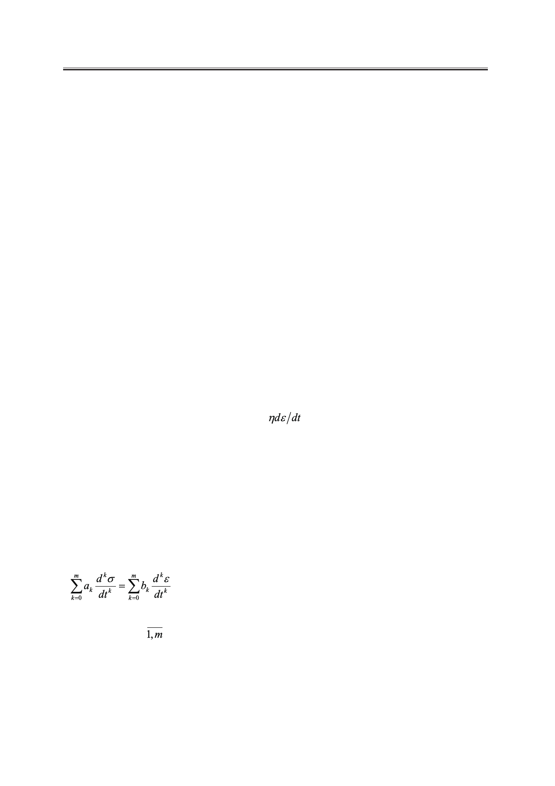

Новые функциональные соотношения для линейных реологических моделей Максвелла
и Кельвина-Фогта
The article proposes new functional relationships for deformations and stresses within the
framework of the linear rheological Maxwell and Kelvin-Vogt models. The relations obtained
are valid for the entire time interval, which allows one to consider numerous special cases of
creep and relaxation tension, in particular the following practical regimes: constant tension,
constant deformation, constant strain rate. In calculations, the Heaviside step function, the
Dirac delta function, and the solution of the Cauchy problem proposed by E.M. Kartashov
were used. Using of generalized functions allows us to consider more complex three-element
models, for example, with two springs and one damper and vice versa. At the same time, the
principal aspect of the approach does not change, the mathematical calculations are practically
not complicated. The proposed relations can be used in rheology as a generalizing form of the
record containing known special cases. This work presents a methodological interest for the
departments of polymeric profile.
Keywords: relaxation, creep, tension, deformation, polymers, Maxwell model, Kelvin-
Voigt model, Cauchy problem, elasticity, viscosity, differential equations.
Введение
Необходимость в построении механических моделей полимерных тел возникла
вследствие неприменимости обычных уравнений упругости и вязкости к полиме-
рам. Полимеры в одних случаях ведут себя как упругие тела, а в других – как вязкие
жидкости, поэтому их механическое поведение не подчиняется ни закону Гука
σ = Еε,
ни закону вязкого течения Ньютона
σ=
,
где σ – напряжение [Па];
ε – деформация (безразмерная величина);
Е – модуль упругости [Па];
η – коэффициент вязкости [Па∙с].
Для описания механического поведения полимерных тел были разработаны соответ-
ствующие модели, которые учитывают одновременно протекающие процессы упругого
деформирования и вязкого течения [1−3]. При этом под механической моделью матери-
ала подразумевается не только набор пружин (упругость) и демпферов (вязкость), но и
соответствующие моделям дифференциальные уравнения вида
, t>0
(1)
с заданными начальными условиями для напряжения σ(t), либо для деформации ε(t):
здесь аk, bk (k = ) – постоянные коэффициенты, которые определяют механические
свойства изучаемого материала.
Модельные представления на основе уравнения (1) неизменно излагаются в лите-
ратуре по механике и физике полимеров [1−4]. И как это ни странно, но в столь, каза-
лось бы, завершенной области реологии еще остались «математические резервы» для
переосмысления аналитических решений уравнения (1). Математической формой этих
52
Российский технологический журнал 2017 Том 5 № 5